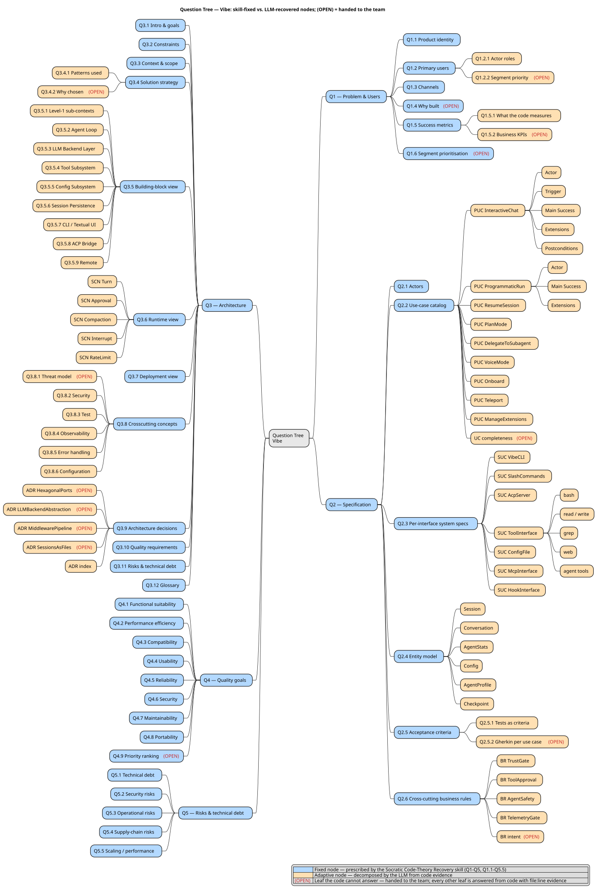

A legacy codebase runs in production. It works. Nobody on the current team can tell you why it works the way it does. The original developers are gone, and the reasoning left with them. Peter Naur called that reasoning the program's theory, and in 1985 he argued that it lives in human heads, not in source files.
Socratic Code-Theory Recovery is a method for getting as much of that theory back as a codebase will give you, and for naming precisely the parts it will never give you. This tutorial walks the method end to end on a real example: Mistral Vibe, a command-line tool of about 43,000 lines of Python that I did not write and had never read.
The method produces two things. The first is a set of architecture documents synthesized from the code. The second is a list of open questions that no LLM could have answered. The second list is the more valuable one. It is the checklist for making a brownfield project ready for AI-assisted work.
What you need
- Claude Code.
- docToolchain, for the arc42 template. Set up below.
- The Semantic Anchors plugin, installed in the steps below.
- A codebase you want to recover. This walkthrough uses Mistral Vibe; any undocumented project works.
The method runs in five steps. Step one prepares the ground; steps two to four recover and write; step five checks the result.
Setup: docToolchain and the arc42 template
Before the five steps, lay down the target structure by hand. Step 4 writes an arc42 document, and it needs a place to write into. docToolchain ships the arc42 template that provides that skeleton.
Install the docToolchain wrapper and download the template:
curl -Lo dtcw https://doctoolchain.org/dtcw
chmod +x dtcw
./dtcw downloadTemplate -PdtcTemplate=arc42 -PdtcLang=EN -PdtcHelp=withhelp -PdtcAntora=ndownloadTemplate used to ask its questions interactively, which an agent cannot answer. It now accepts the answers as -P properties, so the call runs unattended. The four flags pick the arc42 template, English, the variant that keeps the explanatory help text in each chapter, and no Antora setup. (For the built-in defaults you can instead set DTC_HEADLESS=true and drop the flags, but that variant uses plain help, and the help text is worth keeping for a first run.)
The template lands in src/docs/arc42. That is the skeleton Step 4 writes into.
Step 1: Install the semantic contracts
The method leans on shared vocabulary. When a prompt says "Cockburn use case" or "arc42 section 9", every tool in the chain has to read those terms the same way. Semantic Anchors are that shared vocabulary.
You need two things from the Semantic Anchors project. The first is the recovery skill. Install it as a Claude Code plugin:
/plugin marketplace add LLM-Coding/Semantic-Anchors
/plugin install semantic-anchors@semantic-anchorsThis plugin ships the recovery skill used in Steps 2 and 4.
The second is the contracts themselves. The plugin does not install them. Copy the contract text from llm-coding.github.io/Semantic-Anchors/contracts into your project's agent file, CLAUDE.md or AGENTS.md, so the agent and every sub-agent share one definition of each term.
For this tutorial, copy the full set of contracts. It is the simplest path. A leaner set works too: a recovery task really only needs arc42, Cockburn use cases, ISO 25010, Nygard ADRs, ATAM, and Fagan Inspection. The cost of the full set is context length, not correctness.
Add one more thing to the same agent file: a short Docs-as-Code convention, so the synthesized documentation lands where docToolchain expects it. Without it, Phase 2 writes a standalone arc42 file and ignores the template from the setup step.
## Docs-as-Code
- docToolchain reads its sources from src/docs/. Write all
documentation there.
- Fill the arc42 template at src/docs/arc42/; do not create a
standalone arc42 file. Write each chapter into its section
file, set the document title to the system name, and remove
the generic "About arc42" help chapter.
- PRD and specification go directly under src/docs/.
- Cross-references must resolve inside src/docs/; do not point
at the Question Tree or the repo-root docs/ folder.Step 2: Build the Question Tree
Code shows what a program does, never why it ended up that way. The why is the theory, and the why is where an LLM starts to guess. Socratic Code-Theory Recovery stops the guessing by turning recovery into a tree of questions.
Two prerequisites. The code has to run; a recovery on code that does not build is a recovery on a guess. And the method works one bounded context at a time; it advises against recovering a whole system in one pass. This walkthrough still scopes the entire vibe/ package as one context. The note at the end of this step explains why that held up.
Invoke the skill with the bounded context as its argument:
/semantic-anchors:socratic-code-theory-recovery vibe/If you omit the path, the skill asks for it before doing anything else. Phase 1 starts from five root questions, Q1 to Q5, decomposes each one, and uses the semantic anchors from Step 1 as the decomposition guide. arc42 supplies twelve sub-questions for the architecture branch, Cockburn use cases shape the specification branch, and ISO 25010 shapes the quality branch.
Phase 1 writes two AsciiDoc files to the repo root: QUESTION_TREE.adoc, the full reasoning trace, and OPEN_QUESTIONS.adoc, the open leaves grouped by the role that must answer them. On the vibe/ run it took about four minutes. Here is an answered leaf and an open one, in the tree's own format:
=== Q3.5: Building block view
[ANSWERED]
Evidence: AGENTS.md:3, vibe/core/, vibe/cli/, vibe/acp/, vibe/setup/
Four top-level building blocks: vibe/core, vibe/cli (Textual TUI),
vibe/acp (ACP bridge), and vibe/setup (first-run wizards).
==== Q3.9.HexagonalPorts.Rationale
[OPEN]
Category: design-rationale
Ask role: Architect
The code uses ports/adapters, but the reason and the alternatives
weighed are not recorded.An ANSWERED leaf carries evidence: files and line numbers. Phase 1 checks its own citations and corrects a miscited line if it finds one. An OPEN leaf carries a category and the role who can answer it. A third mark, [ANSWERED: partial], sits between them: the code answers the question as far as it goes, and a child leaf carries the part that stays open. The skill stops after Phase 1, on purpose. Phase 2 waits until a human has worked through the open questions.

A note on scope. The whole-package run produced fourteen open questions, inside the method's healthy range of ten to fifteen. That range is the signal that the context was not too broad. A run that produces far more is a sign to split the context; for Mistral Vibe, vibe/core/tools and vibe/acp are the natural finer-grained splits.
If you do split, mind one footgun. Phase 1 always writes the same two fixed filenames, QUESTION_TREE.adoc and OPEN_QUESTIONS.adoc, with no context suffix. Run it for a second bounded context and it overwrites the first run's files; there is no merge. Phase 2 reads the fixed-name tree, so it synthesizes from whichever Phase 1 ran last. Finish one context end to end, Phase 1 through Phase 2, before you start the next, and rename the two files between runs (QUESTION_TREE-core.adoc and so on) if you want to keep the audit trail. This is filed as Semantic Anchors issue #531; once Phase 1 namespaces its output by context, the manual rename goes away.
Step 3: Answer, or defer on purpose
This is the step that matters. The OPEN leaves are not failures. They are the method's main output, and now a human works through OPEN_QUESTIONS.adoc. The file lists the fourteen open questions under role headings, Product Owner, Architect, Developer, Domain Expert, Operations, with several routed to two roles at once. Each question states its category and carries a *Your answer:* block to write into.
Answer what you can, defer the rest on purpose, and be honest about which is which. To answer, write into the *Your answer:* block while playing the role the question is routed to. If the answer is a stand-in rather than a real stakeholder decision, say so in the text. Phase 2 carries that wording into the final document, so a reader can tell a stakeholder fact from a placeholder.
This walkthrough follows the honest path to its end. The recovery was run from outside the Vibe team, so none of the fourteen questions could be answered truthfully: the business-context questions need Mistral's product owner, the design-rationale questions need its architects. Every leaf was deferred, each with an explicit marker and a reason:
=== Q3.9.ADR.SessionsAsFiles: Why folder + JSONL session storage?
Category: design-rationale
*Your answer:*
(deferred — not the Vibe team; no answer available
for this walkthrough)Defer even when you could invent a plausible answer. The discipline is the point. An invented rationale looks exactly like a real one in the final document, and that is the failure mode the method exists to prevent. A fully deferred run is not a weaker run; it is the method being honest that a program's theory lives with its team, not in its code.
One deferred leaf is worth watching. Q4.9 ranks the quality goals against each other, and Step 5's ATAM needs that ranking. Deferring it does not block the ATAM; it makes the evaluation provisional, which is a result in itself.
You do not have to mark every deferral by hand. When you start Phase 2, you can tell the skill to treat each still-unanswered leaf as deferred; it records them as known gaps rather than inventing answers. That is the path this walkthrough takes.
Step 4: Synthesize the documentation
Invoke the skill again:
/semantic-anchors:socratic-code-theory-recoveryAsk it explicitly for Phase 2; it will not proceed on its own. The skill checks OPEN_QUESTIONS.adoc first. If a leaf is still an empty placeholder, it stops and offers a choice: fill the remaining leaves yourself, or have it treat every unanswered leaf as deferred. Pick the deferred option, and Phase 2 runs.
Phase 2 reads the answered tree and writes the documents: a PRD from the problem branch, a specification with Cockburn use cases, an arc42 architecture document with all twelve chapters, and Nygard ADRs with a Pugh Matrix. On the vibe/ run it took about thirteen minutes, against the four that Phase 1 needed; synthesis is the slower half. With the Docs-as-Code convention from Step 1 in place, it writes them under src/docs/ and fills the arc42 template's chapter files. Code-derived claims carry the file:line citation copied from their tree leaf; statements that came from a human carry a (team answer) marker. The Q-IDs stay in QUESTION_TREE.adoc, the audit trail behind the document; they are not stamped into the final text.
Where a leaf was deferred, Phase 2 does not fill the gap. The arc42 decisions chapter records the design choice as a decision with no documented rationale and flags it as an open question. An ADR's Pugh Matrix leaves the cells that need team judgment marked with a question mark, not a guessed score. The gap is visible, named, and traceable. It is not hidden, and it is not invented.
The documentation is AsciiDoc, so docToolchain can render it. ./dtcw generateSite builds a browsable HTML site from src/docs/. That is the moment the recovered theory becomes something the team can read. The output of this walkthrough is published: see the rendered arc42 documentation for Mistral Vibe. Chapter 1 carries the deferred business questions as a visible NOTE; chapter 5 renders its C4 building-block views as SVG.
Step 5: Review independently, and look ahead to ATAM
A synthesized document needs an independent check, one that does not share context with the recovery run. Run these reviews in a fresh session, ideally on a different model, so the reviewer has no memory of the recovery and no stake in defending it. Each review writes its findings as an AsciiDoc report under src/docs/reports/, so the results live in the documentation set alongside what they assess.
First, a Fagan Inspection. The semantic contracts you installed in Step 1 define it, so the agent already knows the method:
Perform a Fagan Inspection of the documentation under
src/docs/. Report defects only: contradictions between
chapters, vague or unfalsifiable claims, and statements
with no file:line evidence. List findings; do not fix.
Write the report as AsciiDoc to
src/docs/reports/fagan-inspection.adoc.On the vibe/ run this found twenty-one defects, five of them major: a chapter-3 system list that chapter 5 contradicts, a code-behaviour claim with no evidence anywhere, two different controls named for one threat. The full Fagan inspection report is published with the recovered documentation.
Second, a traceability check. The final documents carry no Q-IDs; the Question Tree stays the intermediate artifact. So the check traces each claim back to a tree leaf:
Trace every claim in src/docs/ back to a leaf in
QUESTION_TREE.adoc. List claims that trace to no leaf, and
claims that trace to an OPEN leaf without being marked as a
gap or a (team answer). Write the report as AsciiDoc to
src/docs/reports/traceability-check.adoc.A claim that traces to no leaf bypassed the tree: it was read straight from code during synthesis, which is exactly what Phase 2 forbids. A claim resting on an OPEN leaf must show as a gap, not as fact. On the vibe/ run the traceability check returned six findings: thirteen of the fourteen OPEN leaves were correctly deferred, but four claims traced to no leaf and two rested on an OPEN leaf while reading as fact. One of those two is sharp, a quality-goal split presented as code-derived when the only ranking leaf is open.
ATAM is the natural next step, and this walkthrough shows what it does when its central input is missing. An ATAM weighs the architecture against named tradeoffs, agent autonomy against safety and speed against correctness, through scenarios, and to weigh them it needs a quality-goal ranking. Here that ranking, Q4.9, was deferred. The evaluation does not stall. It proceeds on a provisional order derived from code emphasis, labels that order clearly, and records the deferral as a master risk that every weight in the report inherits. The recovery supplied the rest of what ATAM needs: Q4.2 and Q4.5 give measurable scenarios, the 720-second LLM timeout, the 200,000-token compaction trigger, retry with backoff. So the evaluation can describe every tradeoff precisely; it just cannot adjudicate them until the team answers Q4.9, Q3.8.1 and Q2.6.BR.intent. Its own conclusion, that the highest-value next action is answering three open questions rather than changing code, is the method's thesis stated by the review itself.
One caveat about what the prompt actually delivers. A full ATAM elicits its scenarios from stakeholders in a workshop and builds a utility tree with them; an LLM cannot run that workshop. What it produces is a scenario-based architecture review in ATAM's form: the scaffold, plausible code-grounded scenarios, the sensitivity and tradeoff points, the risk list. That is genuinely useful, but the stakeholder conversation stays human. The evaluation becomes binding once a real architect and product owner answer the deferred Q4.9 and the threat-model question behind it.
Run an ATAM evaluation of the architecture in src/docs/arc42/.
For the priority list, use the Q4.9 quality-goal ranking; if
Q4.9 is deferred, derive a provisional order from code
emphasis, label it provisional, and record the deferral as a
master risk. Build scenarios for the named tradeoffs (autonomy
vs. safety, speed vs. correctness), and identify the
sensitivity and tradeoff points. Flag any scenario that rests
on a deferred question. Write the report as AsciiDoc to
src/docs/reports/atam-evaluation.adoc.The ATAM evaluation from this run is published in full: nine architectural approaches, eleven scenarios, and the central finding that the tiered permission system inverts itself in programmatic mode, where every prompt-to-ask collapses to always-allow.
Then comes the rework, in a separate session again. Classic Fagan Inspection keeps detection and rework apart, by separate roles; the same split holds here, so the agent that fixes a finding is not the one that defended its synthesis. The reports list two kinds of finding, and only one kind gets fixed. Defects do: a contradiction between chapters, a claim with no file:line evidence, a claim that rests on an OPEN leaf but reads as fact. The fix for an unsupported claim is usually to delete it or mark it a gap, not to invent support for it. Gaps do not: a deferred threat model, an unranked quality goal, an open business question. Those stay open by design, and closing them by invention is the exact failure the method exists to prevent. One finding type is neither. The traceability check may flag a claim that traces to no leaf but that is code-true and already carries file:line evidence. Do not delete it. The defect is a missing leaf in the Question Tree, a Phase 1 task, not a flaw in the document. Log it for the next Phase 1 run and leave the accurate documentation in place. After rework, re-run the traceability check to confirm no new untraceable claim slipped in.
Read the review reports under src/docs/reports/. Fix only
defects: cross-chapter contradictions, claims with no
file:line evidence, and claims resting on an OPEN leaf that
are stated as fact. Prefer deleting or marking an unsupported
claim as a gap over inventing support. Do NOT fill any
deferred gap. Then re-run the traceability check.What the open leaves taught us
Run the method and look at OPEN_QUESTIONS.adoc. For Mistral Vibe the fourteen open questions fall into a handful of categories. Business context: why Mistral built the tool, which user segment has priority. Design rationale: why a ports-and-adapters structure, why file-based persistence and no database, why ship non-Mistral LLM backends. Stakeholder context: the threat model, who accepts the agent-autonomy risk, who operates deployed installs. And the priority among quality goals, which the code invests in but never ranks.
That clustering is the real result. It is the checklist for making any brownfield project ready for AI-assisted work. The code already answers the "what". To make the project AI-ready, a human has to write down, once, the answers to the leaves that stayed open: the rationale behind the structure, the intent behind the behavior, the priority among the quality goals.
An LLM will never recover those by reading the code harder. They were decisions, made once, in rooms the code never saw.
The result
Socratic Code-Theory Recovery does not turn a legacy codebase into a documented one. It turns an undocumented codebase into a documented one plus a short, precise list of what only a human can still answer. That list is the part worth paying for.
The output of this run is public, so you can read the real thing rather than take the walkthrough's word for it. The recovered documentation for Mistral Vibe is a browsable site: the PRD and specification, the twelve arc42 chapters, the four ADRs, the Question Tree, and the three review reports. Behind it, in the source repository, sit the two Phase 1 artifacts the site is built from, the Question Tree and the handoff document.
LinkedWild